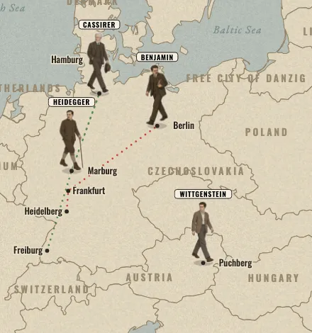
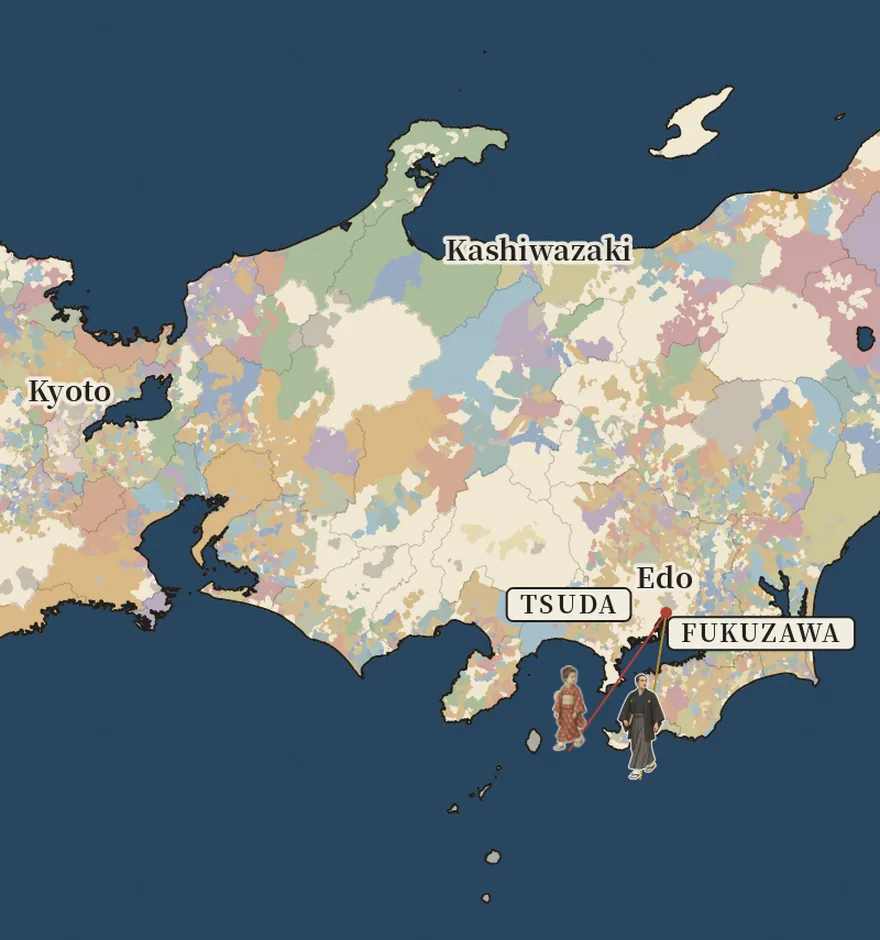

-

Europe, 1919 to 1929 Time of the Magicians A ruined continent rebuilds its borders while four philosophers change how we think. After Wolfram Eilenberger’s book. Wittgenstein, Heidegger, Benjamin and Cassirer -

Japan, 1868 to 1878 The Map Redrawn More than 260 domains, mapped village by village, give way to the prefectures of 1871 and 1876. Made by Yuya with the Papermorph Skill. Fukuzawa Yukichi, Itō Hirobumi, Saigō Takamori and Tsuda Umeko
How they are made
The borders come from historical data, not from drawings: one snapshot a year of Europe’s states for the first map, and who held each village in Japan on the eve of 1868 for the second, regrouped into prefectures by the decrees of 1871 and 1876. The people’s years are told in our own words from biographies and histories, and each map lists its sources. Pictures of the events are period photographs and prints in the public domain. The walking figures were drawn by an image model, and everything else, from the borders to the walks, is drawn in code.
The Map Redrawn reuses the playback code of Time of the Magicians, so the next map starts from a working one.